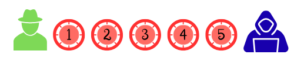

Trivial
Has llegado al final, solo queda esta prueba para derrotar a los atacantes y dejar a salvo el sistema digital, y todo, gracias a ti.

La quinta misión consiste en un trivial. Hay 5 categorías diferentes y tu objetivo es ir deslazándote por el tablero e ir respondiendo las preguntas que te aparecen, hasta completar todos los quesitos.
¡Demuestra lo que sabes!
{"asignatura":"","author":"","authorVideo":"","typeGame":"Trivial","endVideo":0,"idVideo":"","startVideo":"","instructionsExe":"%3Cp%20style%3D%22text-align%3A%20center%3B%22%3EHas%20llegado%20al%20final%2C%20solo%20queda%20esta%20prueba%20para%20derrotar%20a%20los%20atacantes%20y%20dejar%20a%20salvo%20el%20sistema%20digital%2C%20y%20todo%2C%20gracias%20a%20ti.%A0%3C/p%3E%0A%3Cp%20style%3D%22text-align%3A%20center%3B%22%3E%3Cimg%20src%3D%22/previews/C__Users_usuari_OneDrive_Escriptori_Pedagogia_TERCERO_TIC_acci_C3_B3n_educativa_m5.png%22%20alt%3D%22%22%20width%3D%22500%22%20height%3D%22112%22%20/%3E%3C/p%3E%0A%3Cp%20style%3D%22text-align%3A%20center%3B%22%3ELa%20quinta%20misi%F3n%20consiste%20en%20un%20trivial.%20Hay%205%20categor%EDas%20diferentes%20y%20tu%20objetivo%20es%20ir%20deslaz%E1ndote%20por%20el%20tablero%20e%20ir%20respondiendo%20las%20preguntas%20que%20te%20aparecen%2C%20hasta%20completar%20todos%20los%20quesitos.%A0%3C/p%3E%0A%3Cp%20style%3D%22text-align%3A%20center%3B%22%3E%3Cb%3E%A1Demuestra%20lo%20que%20sabes%21%3C/b%3E%3C/p%3E","instructions":"Lanza el dado y contesta a la pregunta hasta completar todos los quesos. ","showMinimize":false,"optionsRamdon":true,"answersRamdon":true,"showSolution":true,"timeShowSolution":3,"useLives":false,"numberLives":3,"itinerary":{"showClue":false,"clueGame":"","percentageClue":100,"showCodeAccess":false,"codeAccess":"","messageCodeAccess":""},"numeroTemas":5,"nombresTemas":["Un mensaje sospechoso","Contraseña repetida","Uso de dispositivos compartidos","Dónde guardo mis contraseñas","Mejora de contraseñas","Tema 6"],"temas":[[{"a":"","b":0,"c":0,"d":0,"f":0,"g":35,"h":"","i":1,"j":1,"m":1,"n":3,"o":["Hago clic por si acaso es verdad.","Ignoro el mensaje y lo borro.","Reenvío el correo a mis amigos para que también ganen el premio.",""],"p":0,"q":"Recibes un correo diciendo que has ganado un móvil nuevo y que hagas clic en un enlace para reclamarlo.","r":"","s":"MTAzQg==","t":"","u":"","x":0,"y":0,"z":0,"ad":""},{"a":"","b":0,"c":0,"d":0,"f":0,"g":35,"h":"","i":1,"j":1,"m":1,"n":3,"o":["Hago clic.","Verifico la información desde la web oficial.","Reenvío el mensaje a mis contactos.",""],"p":0,"q":"Te llega un mensaje diciendo que tu contraseña ha caducado y debes cambiarla en un enlace extraño. ¿Qué haces?","r":"","s":"MTEwQg==","t":"","u":"","x":0,"y":0,"z":0,"ad":""},{"a":"","b":0,"c":0,"d":0,"f":0,"g":35,"h":"","i":1,"j":1,"m":1,"n":3,"o":["Sí, es sospechoso.","No, todo en Instagram es seguro.","Solo si lo dice un amigo.",""],"p":0,"q":"Un mensaje en Instagram te dice “Mira quién te mencionó” con un enlace raro. ¿Podría ser phishing?","r":"","s":"OThB","t":"","u":"","x":0,"y":0,"z":0,"ad":""},{"a":"","b":0,"c":0,"d":0,"f":0,"g":35,"h":"","i":1,"j":1,"m":1,"n":3,"o":["Sí, si dice que es técnico.","No, nadie debe conocer tus contraseñas.","Solo si lo hace por teléfono.",""],"p":0,"q":"Un técnico te pide tu contraseña. ¿Debes dársela?","r":"","s":"NDlC","t":"","u":"","x":0,"y":0,"z":0,"ad":""},{"a":"","b":0,"c":0,"d":0,"f":0,"g":35,"h":"","i":1,"j":1,"m":1,"n":3,"o":["No, seguro que es un aviso real.","Solo si llega de madrugada.","Sí, suena a engaño.",""],"p":0,"q":"“Tu cuenta será eliminada si no haces clic en un enlace”. ¿Es una señal de alarma?","r":"","s":"ODJD","t":"","u":"","x":0,"y":0,"z":0,"ad":""}],[{"a":"","b":0,"c":0,"d":0,"f":0,"g":35,"h":"","i":1,"j":1,"m":0,"n":3,"o":["No pasa nada, así es más fácil recordarla","Cambio la contraseña solo del juego","Creo contraseñas diferentes para cada cuenta importante.",""],"p":0,"q":"Tienes la misma contraseña para Instagram, el correo del instituto y tu juego online favorito.","r":"","s":"OTRD","t":"","u":"","x":0,"y":0,"z":0,"ad":""},{"a":"","b":0,"c":0,"d":0,"f":0,"g":35,"h":"","i":1,"j":1,"m":1,"n":3,"o":["Nada, son cuentas distintas.","Solo afecta al juego.","Podrían entrar a todas tus cuentas.",""],"p":0,"q":"Usas la misma contraseña para juegos y correo. ¿Qué pasa si hackean una?","r":"","s":"NzJD","t":"","u":"","x":0,"y":0,"z":0,"ad":""},{"a":"","b":0,"c":0,"d":0,"f":0,"g":35,"h":"","i":1,"j":1,"m":1,"n":3,"o":["Todas las cuentas con la misma contraseña","Solo la cuenta filtrada.","Nada, porque ya has perdido la cuenta.",""],"p":0,"q":"Una cuenta ha sido filtrada. ¿Qué debes cambiar?","r":"","s":"NDhB","t":"","u":"","x":0,"y":0,"z":0,"ad":""},{"a":"","b":0,"c":0,"d":0,"f":0,"g":35,"h":"","i":1,"j":1,"m":1,"n":3,"o":["Verdadero","Falso","Solo a veces",""],"p":0,"q":"Una contraseña única por cuenta te protege de ataques en cadena.","r":"","s":"NjRB","t":"","u":"","x":0,"y":0,"z":0,"ad":""},{"a":"","b":0,"c":0,"d":0,"f":0,"g":35,"h":"","i":1,"j":1,"m":1,"n":3,"o":["Contraseñas cortas pero recordables.","Una única contraseña para todo.","Contraseñas diferentes para cada red social.",""],"p":0,"q":"¿Qué es mejor?","r":"","s":"MTRD","t":"","u":"","x":0,"y":0,"z":0,"ad":""}],[{"a":"","b":0,"c":0,"d":0,"f":0,"g":35,"h":"","i":1,"j":1,"m":1,"n":3,"o":["Me conecto y lo dejo abierto cuando termino.","Cierro sesión y borro el historial antes de irme","Me conecto sin contraseña porque no es mi dispositivo.",""],"p":0,"q":"Te conectas a tu correo en un ordenador público de la biblioteca.","r":"","s":"NjVC","t":"","u":"","x":0,"y":0,"z":0,"ad":""},{"a":"","b":0,"c":0,"d":0,"f":0,"g":35,"h":"","i":1,"j":1,"m":1,"n":3,"o":["Sí, porque al ser publico tienen más protección..","Solo si es el de un centro educativo.","No",""],"p":0,"q":"¿Es seguro guardar contraseñas en un ordenador público?","r":"","s":"NTU=","t":"","u":"","x":0,"y":0,"z":0,"ad":""},{"a":"","b":0,"c":0,"d":0,"f":0,"g":35,"h":"","i":1,"j":1,"m":1,"n":3,"o":["Que tiene bateria.","Que esta conectado al wifi.","Que no recuerde cuentas de otros.",""],"p":0,"q":"Antes de iniciar sesión en un ordenador ajeno, comprueba","r":"","s":"NTZBQw==","t":"","u":"","x":0,"y":0,"z":0,"ad":""},{"a":"","b":0,"c":0,"d":0,"f":0,"g":35,"h":"","i":1,"j":1,"m":1,"n":3,"o":["Nada, se cierra solo.","La siguiente persona puede acceder.","Solo afecta si usas correo.",""],"p":0,"q":"¿Qué pasa si no cierras sesión?","r":"","s":"MzFC","t":"","u":"","x":0,"y":0,"z":0,"ad":""},{"a":"","b":0,"c":0,"d":0,"f":0,"g":35,"h":"","i":1,"j":1,"m":1,"n":3,"o":["Sí, si lo conoces bien.","Sí, si lo hace rápido.","No, puede ver toda tu información.",""],"p":0,"q":"Un amigo te pide usar tu sesión abierta. ¿Es seguro?","r":"","s":"NTJD","t":"","u":"","x":0,"y":0,"z":0,"ad":""}],[{"a":"","b":0,"c":0,"d":0,"f":0,"g":35,"h":"","i":1,"j":1,"m":1,"n":3,"o":["Las escribo en una nota del móvil sin bloqueo ni contraseña.","Las apunto en un papel que guardo en casa.","Uso un gestor de contraseñas",""],"p":0,"q":"Tienes varias contraseñas nuevas y quieres asegurarte de no olvidarlas. Estás pensando en cómo guardarlas para no perder el acceso a tus cuentas.","r":"","s":"MTQ1Qw==","t":"","u":"","x":0,"y":0,"z":0,"ad":""},{"a":"","b":0,"c":0,"d":0,"f":0,"g":35,"h":"","i":1,"j":1,"m":1,"n":3,"o":["La clave maestra para ver las contraseñas.","La del WiFi para acceder.","No hace falta clave para entrar al gestor.",""],"p":0,"q":"¿Cuál es la clave más importante en un gestor de contraseñas?","r":"","s":"NjFB","t":"","u":"","x":0,"y":0,"z":0,"ad":""},{"a":"","b":0,"c":0,"d":0,"f":0,"g":35,"h":"","i":1,"j":1,"m":1,"n":3,"o":["Sí, con tu mejor amigo.","Solo con compañeros.","No, nunca.",""],"p":0,"q":"¿Se puede compartir la contraseña maestra?","r":"","s":"NDJD","t":"","u":"","x":0,"y":0,"z":0,"ad":""},{"a":"","b":0,"c":0,"d":0,"f":0,"g":35,"h":"","i":1,"j":1,"m":1,"n":3,"o":["Repetir la misma en todo.","Gestor de contraseñas","Poner todas iguales pero largas.",""],"p":0,"q":"Tienes muchas contraseñas. ¿Qué te protege mejor?","r":"","s":"NDlC","t":"","u":"","x":0,"y":0,"z":0,"ad":""}],[{"a":"","b":0,"c":0,"d":0,"f":0,"g":35,"h":"","i":1,"j":1,"m":1,"n":3,"o":["Pongo mi nombre + un número","Uso una frase modificada con símbolos y números","Uso la misma contraseña que mi mejor amiga.",""],"p":0,"q":"Quieres actualizar tu contraseña de redes sociales.","r":"","s":"NTFC","t":"","u":"","x":0,"y":0,"z":0,"ad":""},{"a":"","b":0,"c":0,"d":0,"f":0,"g":35,"h":"","i":1,"j":1,"m":1,"n":3,"o":["Es más larga y difícil de adivinar.","Porque queda mejor.","Porque si te la apuntas no es dificil recordarla.",""],"p":0,"q":"¿Por qué una frase es más segura?","r":"","s":"MzM=","t":"","u":"","x":0,"y":0,"z":0,"ad":""},{"a":"","b":0,"c":0,"d":0,"f":0,"g":35,"h":"","i":1,"j":1,"m":1,"n":3,"o":["Cambiarla cada varios años.","Cambiarla periódicamente.","No cambiarla nunca.",""],"p":0,"q":"¿Qué opción es mejor para gestionar las contraseñas?","r":"","s":"NTJC","t":"","u":"","x":0,"y":0,"z":0,"ad":""},{"a":"","b":0,"c":0,"d":0,"f":0,"g":35,"h":"","i":1,"j":1,"m":1,"n":3,"o":["Seguro","Predecible","Actual",""],"p":0,"q":"Nombre + fecha de nacimiento es…","r":"","s":"MzJC","t":"","u":"","x":0,"y":0,"z":0,"ad":""},{"a":"","b":0,"c":0,"d":0,"f":0,"g":35,"h":"","i":1,"j":1,"m":1,"n":3,"o":["Usar tu nombre al inicio.","Usar solo minúsculas.","Mezclar letras, números y símbolos",""],"p":0,"q":"Regla más importante para contraseñas seguras.","r":"","s":"NDZD","t":"","u":"","x":0,"y":0,"z":0,"ad":""}]],"isScorm":0,"textButtonScorm":"Guardar la puntuación","repeatActivity":false,"title":"","customScore":false,"textAfter":"","msgs":{"msgStartGame":"Pulse aquí para empezar","msgSubmit":"Enviar","msgEnterCode":"Introduzca el código de acceso","msgErrorCode":"El código de acceso no es correcto","msgGameOver":"¡Fin de la partida!","msgClue":"¡Genial! La pista es:","msgNewGame":"Pulse aquí para empezar otra partida","msgCodeAccess":"Código de acceso","msgPlayStart":"Pulse aquí para jugar","msgMinimize":"Minimizar","msgMaximize":"Maximizar","msgTime":"Tiempo por pregunta","msgFullScreen":"Pantalla Completa","msgExitFullScreen":"Salir del modo pantalla completa","msgNoImage":"Pregunta sin imágenes","msgSuccesses":"¡Correcto! | ¡Excelente! | ¡Genial! | ¡Muy bien! | ¡Perfecto!","msgFailures":"¡No era eso! | ¡Incorrecto! | ¡No es correcto! | ¡Lo sentimos! | ¡Error!","msgNotNetwork":"A este juego sólo se puede jugar con conexión a internet.","msgQuestion":"Pregunta","msgAnswer":"Comprobar","msgInformation":"Información","msgAuthor":"Autoría","msgActityComply":"Ya ha realizado esta actividad.","msgPlaySeveralTimes":"Puede realizar esta actividad cuantas veces quiera","msgYouLastScore":"La última puntuación guardada es","msgOption":"Opción","msgImage":"Imagen","msgOrders":"Ordena todas las respuestas","msgIndicateWord":"Proporcione una palabra o expresión","msgGameStarted":"El juego ya ha comenzado.","msgPlayersName":"Debes indicar un nombre para todos los jugadores seleccionados.","msgReboot":"¿Deseas reiniciar el juego?","msgRoolDice":"lanza el dado.","msgsWinner":"El juego ha terminado. El ganador es %1. ¿Deseas volver a jugar?","msgWinGame":"¡Genial! Ganas la partida.","msgsYouPlay":"tú juegas. Lanza el dado.","msgSaveDiceAuto":"Su puntuación se guardará automáticamente tras cada tirada.","msgOnlyFirstGame":"Sólo puede jugar una vez.","msgGamers":"Jugadores","msgReply":"Responder","msgErrorQuestion":"has fallado.","msgGetQueso":"consigues el queso de","msgRightAnswre":"Un punto más.","msgAudio":"Audio","msgCorrect":"Correcto","msgIncorrect":"Incorrecto","msgUncompletedActivity":"Actividad no completada","msgSuccessfulActivity":"Actividad superada. Puntuación: %s","msgUnsuccessfulActivity":"Actividad no superada. Puntuación: %s","msgNext":"Siguiente","msgTypeGame":"Curiosidad","msgRestart":"Reiniciar"},"trivialID":1763979035022,"version":2,"modeBoard":false,"evaluation":false,"evaluationID":"","id":"2025112410178-60"}
Su navegador no es compatible con esta herramienta.